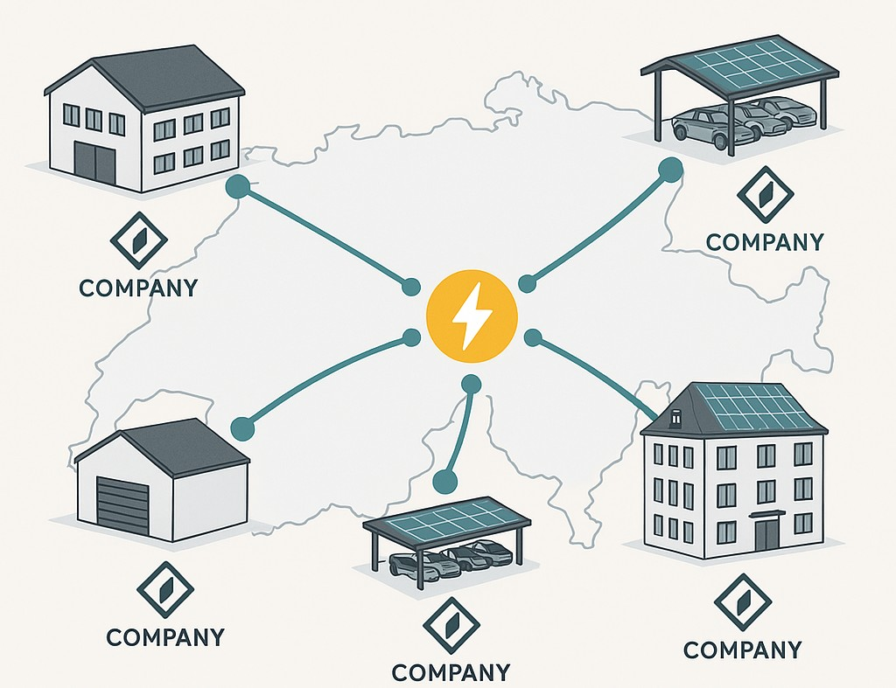
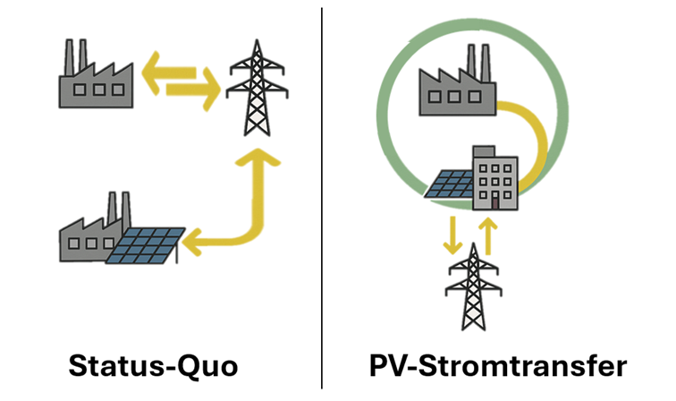
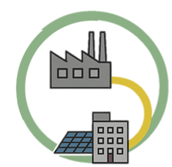

🔍 Das Problem

Viele Unternehmen investieren in Photovoltaik – und bleiben trotzdem abhängig vom Stromnetz.
Warum? Weil der selbst produzierte Strom oft nur am Standort genutzt werden kann.
Der Rest? Wird billig eingespeist – während an anderen Standorten teurer Netzstrom bezogen wird.
Hinzu kommen schwankende Marktpreise und neue Regulierungen, die Ihre Energiekosten unberechenbar machen.
⚡ Die Lösung: PV-Stromtransfer

Unsere Lösung: Der PV-Stromtransfer.
Mit unserer Technologie wird Ihr Solarstrom automatisch zwischen Ihren Standorten verteilt – schweizweit.
Intelligente Steuerung sorgt dafür, dass der Strom dort genutzt wird, wo er gebraucht wird – ganz ohne manuelles Eingreifen.
✅ Ihre Vorteile
- Bis zu 100 % Eigenverbrauch
- Deutlich geringere Stromkosten
- Bessere CO₂-Bilanz
- Volle Kontrolle über Ihre Energieflüsse – unabhängig von Netz und Politik
🔄 Status Quo vs. PV-Stromtransfer
| Status Quo | Mit PV-Stromtransfer |
|---|
| Strom bleibt am Erzeugungsort oder wird eingespeist | Strom wird unternehmensweit verteilt |
| Abhängigkeit vom Netz | Energieautarkie |
| Unklare Kostenentwicklung | Planbare, optimierte Energienutzung |

📈 Jetzt Potenzial berechnen
Berechnen Sie jetzt kostenlos und unverbindlich, wie viel Sie mit PV-Stromtransfer sparen können.
Jetzt Potenzial berechnen